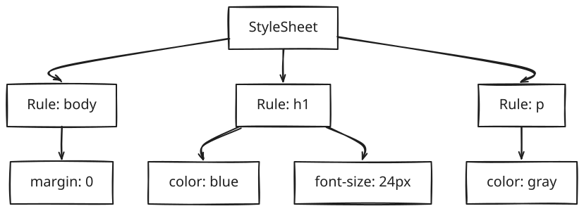

graph TD
Bytes --> Characters --> Tokens --> Nodes --> DOM
subgraph "Sample HTML to DOM Tree"
Document --> html
html --> head
head --> title
title --> PageText["'Page'"]
html --> body
body --> h1
h1 --> HelloText["'Hello'"]
body --> p
p --> WorldText["'World'"]
end
The Preload Scanner
graph TD
subgraph "Preload Scanner (Speculative Parser)"
A["While main parser is blocked by JavaScript"] --> B["1. Scans ahead in HTML"] --> C["2. Finds link, script src, img tags"] --> D["3. Starts downloading them in parallel"]
D --> E["This is why resources start loading before parser reaches them"]
end
CSS Parsing (CSSOM)

Parser Blocking
graph TD
subgraph "Parser Blocking Behavior"
CSS["CSS"] --> C1["Blocks rendering (not parsing)"] --> C2["Must complete before JS can execute"]
JSNone["JavaScript (no async/defer)"] --> J1["Blocks parsing completely"] --> J2["Waits for CSSOM to complete first"]
JSAsync["JavaScript (async)"] --> A1["Downloads parallel"] --> A2["Executes immediately when ready (blocks briefly)"]
JSDefer["JavaScript (defer)"] --> D1["Downloads parallel"] --> D2["Executes after DOM complete, in order"]
end
graph LR
subgraph "Timeline Example"
HP["HTML Parsing (continues throughout)"]
CD["CSS Download/Parse"]
JAD["JS Download (async)"] --> JAE["JS Executes (blocks briefly)"]
JDD["JS Download (defer)"] --> JDE["JS Executes (after DOM complete)"]
end
Excluded from Render Tree:
- <head>, <script>, <meta> (non-visual)
- Elements with display: none
- Elements with visibility: hidden ARE included (they affect layout)
Step 2: Layout (Reflow)
graph TD
subgraph "Layout Calculation"
S1["For each node in Render Tree"] --> S2["1. Calculate computed styles"] --> S3["2. Determine box model (width, height, margin, padding)"] --> S4["3. Calculate position (x, y coordinates)"] --> S5["4. Handle overflow, floats, positioning"]
S5 --> R["Result: Box tree with exact pixel positions"]
subgraph "Box Tree"
Body["body (0,0) 1200x800"] --> H1["h1 (0,0) 1200x32"]
Body --> P["p (0,40) 1200x24"]
end
R --> Body
end
Step 3: Paint
graph TD
subgraph "Paint Operations"
A["Convert layout boxes into actual pixels"] --> B["1. Background colors"] --> C["2. Background images"] --> D["3. Borders"] --> E["4. Text"] --> F["5. Shadows"] --> G["6. Outlines"]
G --> R["Result: Paint records (list of draw commands)"]
end
Step 4: Composite
graph TD
subgraph "Compositing Layers"
T["Elements promoted to own layer"] --> E1["position: fixed/sticky"]
T --> E2["transform (3D)"]
T --> E3["opacity less than 1"]
T --> E4["will-change: transform"]
T --> E5["video, canvas elements"]
T --> E6["CSS filters"]
subgraph "Layer Stack"
L3["Layer 3 (fixed nav)"] --> L2["Layer 2 (modal)"] --> L1["Layer 1 (main content)"]
end
L1 --> GPU["GPU composites layers together"]
end
5. Reflow vs Repaint
What Triggers Each
graph TD
subgraph "Reflow (Layout) - Changes that affect geometry"
RF["Triggers"] --> RF1["width, height, padding, margin, border"]
RF --> RF2["position, top, left, right, bottom"]
RF --> RF3["display, float, clear"]
RF --> RF4["font-size, font-family, font-weight"]
RF --> RF5["Adding/removing DOM elements"]
RF --> RF6["Resizing window"]
RF --> RF7["Reading layout properties (offsetWidth, etc.)"]
RF7 --> RFC["Cost: HIGH (recalculates entire tree or subtree)"]
end
subgraph "Repaint - Changes that affect appearance only"
RP["Triggers"] --> RP1["color, background-color"]
RP --> RP2["visibility"]
RP --> RP3["box-shadow"]
RP --> RP4["outline"]
RP4 --> RPC["Cost: MEDIUM (redraw affected pixels)"]
end
subgraph "Composite Only - Changes handled by GPU"
CO["Properties"] --> CO1["transform"]
CO --> CO2["opacity"]
CO --> CO3["filter (with GPU acceleration)"]
CO3 --> COC["Cost: LOW (GPU handles it, no main thread work)"]
end
Layout Thrashing
// ❌ BAD - Forces synchronous layout on each iteration
elements.forEach(el => {
const width = el.offsetWidth; // READ - forces layout
el.style.width = width + 10 + 'px'; // WRITE - invalidates layout
// Next iteration: READ forces new layout calculation
});
// ✅ GOOD - Batch reads, then batch writes
const widths = elements.map(el => el.offsetWidth); // All READs
elements.forEach((el, i) => {
el.style.width = widths[i] + 10 + 'px'; // All WRITEs
});
// ✅ BETTER - Use requestAnimationFrame
function animate() {
// Batch DOM reads
const measurements = elements.map(el => el.getBoundingClientRect());
// Schedule writes for next frame
requestAnimationFrame(() => {
elements.forEach((el, i) => {
el.style.transform = `translateX(${measurements[i].width}px)`;
});
});
}
6. JavaScript Execution
The Event Loop
graph TD
subgraph "Event Loop"
CS["Call Stack: main(), fn1(), fn2()"] --> SE{"Stack empty?"}
TQ["Task Queue (Macro): setTimeout, setInterval, I/O, UI rendering, requestAnimationFrame"]
MQ["Microtask Queue: Promise.then, queueMicrotask, MutationObserver"]
SE --> AM["Process ALL microtasks"]
MQ -.-> AM
AM --> RN["Render if needed (16.6ms has passed)"]
RN --> PM["Process ONE macro task"]
TQ -.-> PM
PM --> SE
end
graph TD
subgraph "Long Task (greater than 50ms)"
P["Problem"] --> P1["Blocks main thread"]
P --> P2["Prevents rendering"]
P --> P3["Makes page unresponsive"]
P --> P4["Hurts INP metric"]
T["Timeline: Long Task (200ms)"] --> C["User clicks button here"]
C --> D["Can't respond until task ends"]
end
Breaking Up Long Tasks
// ❌ BAD - Single long task
function processItems(items) {
items.forEach(item => {
expensiveOperation(item); // Total: 500ms
});
}
// ✅ GOOD - Yield to main thread
async function processItems(items) {
for (const item of items) {
expensiveOperation(item);
// Yield control back to browser
await scheduler.yield?.() ||
new Promise(r => setTimeout(r, 0));
}
}
// ✅ ALSO GOOD - requestIdleCallback for non-urgent work
function processItems(items) {
const queue = [...items];
function processChunk(deadline) {
while (queue.length && deadline.timeRemaining() > 0) {
expensiveOperation(queue.shift());
}
if (queue.length) {
requestIdleCallback(processChunk);
}
}
requestIdleCallback(processChunk);
}
7. Document Lifecycle Events
graph TD
subgraph "Document Lifecycle"
A["Parsing"] --> B["DOMContentLoaded: DOM tree complete (doesn't wait for images, stylesheets)"]
B --> C["document.readyState = interactive"]
C --> D["Resources loading"]
D --> E["load: Everything loaded (images, styles, iframes)"]
E --> F["document.readyState = complete"]
F --> G["User navigates away"]
G --> H["beforeunload: Chance to confirm leaving"]
H --> I["unload: Cleanup"]
end
// DOMContentLoaded - DOM ready, safe to query
document.addEventListener('DOMContentLoaded', () => {
const button = document.querySelector('#myButton');
// Safe - DOM exists
});
// load - Everything loaded
window.addEventListener('load', () => {
// Images are loaded, can get dimensions
const img = document.querySelector('img');
console.log(img.naturalWidth);
});
// Check current state
if (document.readyState === 'loading') {
document.addEventListener('DOMContentLoaded', init);
} else {
init(); // DOM already ready
}
"When a browser receives an HTML document, it goes through several phases. First, it parses HTML to build the DOM while simultaneously parsing CSS to build the CSSOM. The preload scanner runs ahead to fetch resources in parallel. JavaScript blocks parsing unless marked async or defer. Once DOM and CSSOM are ready, they're combined into a Render Tree (excluding invisible elements). Layout calculates exact positions, Paint generates draw commands, and finally Composite layers are sent to the GPU. I optimize by avoiding layout thrashing, using transform for animations, deferring non-critical JavaScript, and breaking long tasks to stay within the 16ms frame budget for 60fps."